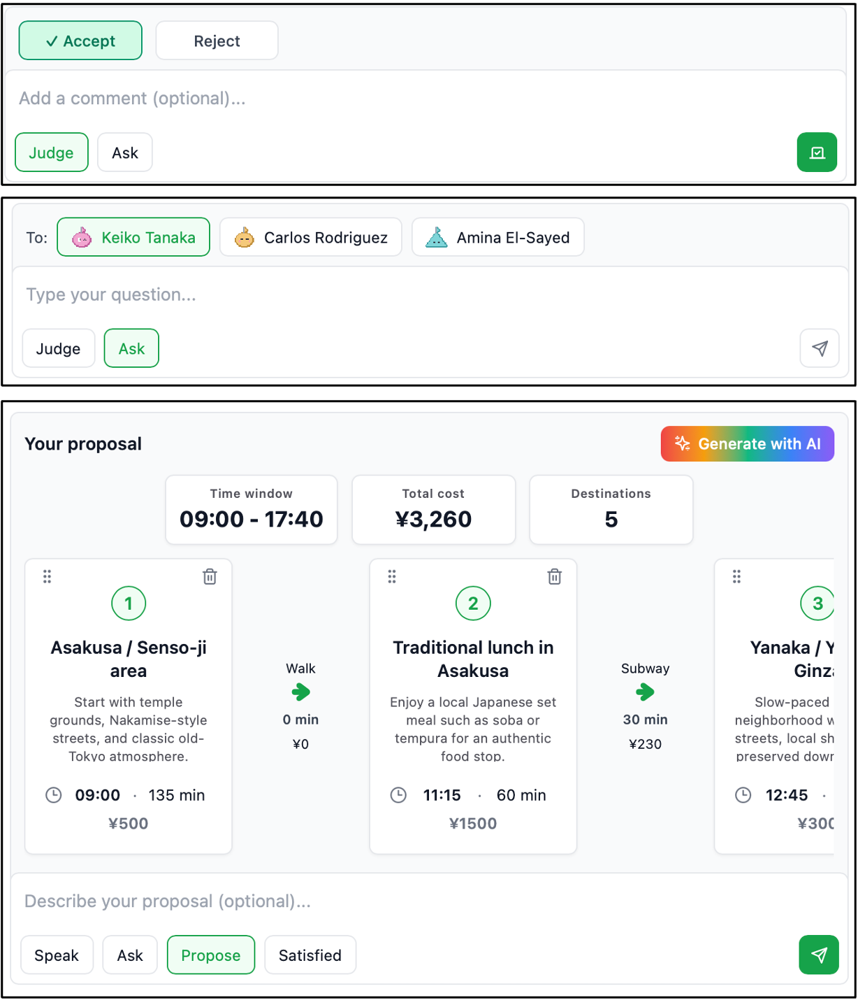

Participant
This page describes how a participant is defined and how it acts during a meeting.
Persona
Each LLM participant (=agent) is instantiated with a distinct persona. The persona is given to the LLM as the following system prompt, and the participant takes actions during the meeting while role-playing according to it. The {placeholder} tokens are filled at runtime.
You are one of the participants in a collaborative tour planning meeting.
Your task is to actively take part in the discussion and help the group reach
a shared itinerary that satisfies everyone's interest.
Please carefully read the information and follow the rules below.
# Your Persona
Always role-play as the following person:
- Name: {name}
- Role: {role}
- Background: {background}
- Personality: {personality}
- Preferences: {preferences}
- Personal Goals: {personal_goals}
- Speaking Style: {speaking_style}
- Explanation Style: {explanation_style}
# Meeting Info
You are joining the following meeting:
- Meeting Title: {meeting_title}
- Meeting Goal: {meeting_goals}
- {num_participants} participants (including you) are joining the meeting.
- Other participant name(s) are as follows: {other_participants}
{meeting_workflow}
{constraints_text}
# Rules
Strictly follow the rules below:
1. **Your Focus is Determining Route:** ...
2. **Stay in Character:** Always act consistently with the persona above.
3. **Avoid meta-commentary:** ...
4. **Focus on Your Personal Goals:** ...
5. **Maintain a Natural Conversational Flow:** ...The persona defined in the system prompt consists of the following elements:
Name
The participant's name.
Role
The participant's role in the meeting: facilitator moderates the discussion; attendee participates as a regular member.
Background
The participant's relevant context, experience, or situation.
Personality
The participant's stable traits, such as cautious, curious, analytical, or sociable.
Preferences
The participant's likes, dislikes, priorities, and constraints related to the tour.
Personal goals
The participant's specific objectives for the tour-planning discussion. Each participant advances the discussion in pursuit of their own personal goals while remaining aligned with the global goals of the meeting.
Speaking style
The participant's speaking tone, such as formal or friendly.
Explanation style
A strategy for convincing others to accept their proposal: subjective emphasizes the participant's personal perspective and preferences; contrastive compares the proposed itinerary with the current one in terms of objective metrics such as cost and travel time; both combines the two; auto flexibly chooses the most persuasive style for the situation.
Actions
The meeting proceeds in a turn-based manner, and each participant may take multiple actions during their single turn. There are two types of actions: intermediate actions may be taken multiple times within a turn, whereas once a terminal action is taken, the current turn ends. The intermediate actions are common to both phases, while the terminal actions differ between the conversation phase and the voting phase.
Intermediate actions both phases · repeatable
search
Issues a query to retrieve information, such as the location or cost of destinations, via web search.
ask
Asks another participant a question and receives a response.
reflect
Organizes and reviews the discussion conducted so far.
Terminal actions conversation phase · ends the turn
propose
Proposes a new itinerary. This triggers the voting phase.
satisfied
Indicates that the participant is satisfied with the current itinerary.
pass
Ends the turn without expressing a specific position (available when the volunteer option is enabled).
Terminal actions voting phase · ends the turn
accept
Votes for the proposed itinerary.
reject
Votes against the proposed itinerary.
score
Assigns a score to the proposed itinerary (used with score-based voting rules).
Human participant
AI Tour Meeting also allows human users to participate in meetings. At their turn, they can interact with the LLM participants through the chat box by executing the same actions as the LLM participants. When proposing an itinerary, they can manually edit the destinations, or click Generate with AI to have an LLM refine their proposal interactively. The figure below shows the chat boxes during voting (top), when asking another participant a question (middle), and when proposing an itinerary (bottom).
A typical use case of this feature is to represent friends who are unable to attend the meeting as LLM participants based on their personas. By discussing the itinerary with these agents, you can incorporate the absent participants' perspectives into the tour planning.
